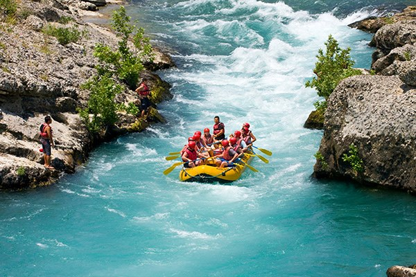
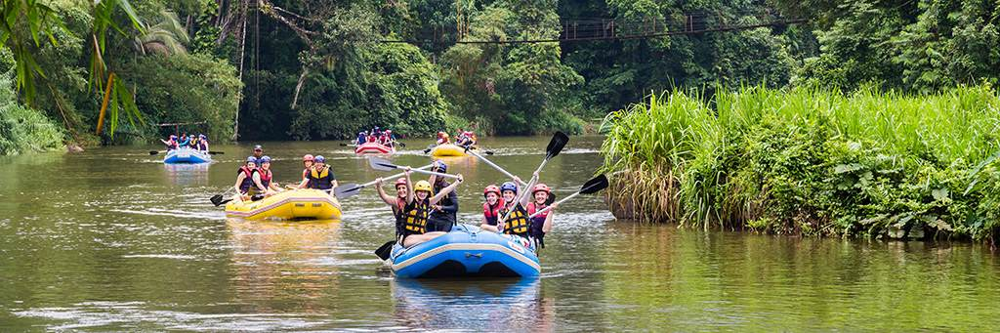

Nossa missão é conectar pessoas à força e à beleza dos rios com segurança, guias experientes e aventuras que criam memórias duradouras.


Nossa missão é conectar pessoas à força e à beleza dos rios com segurança, guias experientes e aventuras que criam memórias duradouras.
Fundada por apaixonados por esportes de aventura e conservação fluvial, a Rafting Corredeiras nasceu com o propósito de oferecer expedições seguras e empolgantes. Ao longo dos anos, expandimos nossas rotas e mantivemos o cuidado com cada detalhe do equipamento e da equipe.